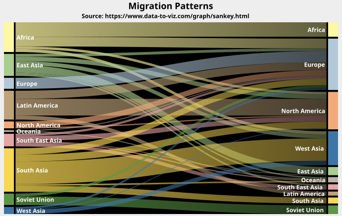

public class FlowPlot extends Plot implements Cloneable, PublicCloneable, Serializable
FlowDataset. This enables
the production of a type of Sankey chart. The example shown here is
produced by the FlowPlotDemo1.java program included in the JFreeChart
Demo Collection:

DEFAULT_BACKGROUND_ALPHA, DEFAULT_BACKGROUND_PAINT, DEFAULT_FOREGROUND_ALPHA, DEFAULT_INSETS, DEFAULT_LEGEND_ITEM_BOX, DEFAULT_LEGEND_ITEM_CIRCLE, DEFAULT_OUTLINE_PAINT, DEFAULT_OUTLINE_STROKE, MINIMUM_HEIGHT_TO_DRAW, MINIMUM_WIDTH_TO_DRAW, ZERO| Constructor and Description |
|---|
FlowPlot(FlowDataset dataset)
Creates a new instance that will source data from the specified dataset.
|
| Modifier and Type | Method and Description |
|---|---|
Object |
clone()
Returns an independent copy of this
FlowPlot instance (note,
however, that the dataset is NOT cloned). |
void |
draw(Graphics2D g2,
Rectangle2D area,
Point2D anchor,
PlotState parentState,
PlotRenderingInfo info)
Draws the flow plot within the specified area of the supplied graphics
target
g2. |
boolean |
equals(Object obj)
Tests this plot for equality with an arbitrary object.
|
FlowDataset |
getDataset()
Returns a reference to the dataset.
|
Color |
getDefaultNodeColor()
Returns the default node color.
|
Font |
getDefaultNodeLabelFont()
Returns the default font used to display labels for the source and
destination nodes.
|
Paint |
getDefaultNodeLabelPaint()
Returns the default paint used to display labels for the source and
destination nodes.
|
double |
getFlowMargin()
Returns the flow margin.
|
List<Color> |
getNodeColorSwatch()
Returns the list of colors that will be used to auto-populate the node
colors when they are first rendered.
|
Color |
getNodeFillColor(NodeKey nodeKey)
Returns the fill color for the specified node.
|
VerticalAlignment |
getNodeLabelAlignment()
Returns the vertical alignment of the node labels relative to the node.
|
double |
getNodeLabelOffsetX()
Returns the x-offset for the node labels.
|
double |
getNodeLabelOffsetY()
Returns the y-offset for the node labels.
|
double |
getNodeMargin()
Returns the node margin (expressed as a percentage of the available
plotting space) which is the gap between nodes (sources or destinations).
|
double |
getNodeWidth()
Returns the width of the source and destination nodes, expressed in
Java2D user-space units.
|
String |
getPlotType()
Returns a string identifying the plot type.
|
FlowLabelGenerator |
getToolTipGenerator()
Returns the tool tip generator that creates the strings that are
displayed as tool tips for the flows displayed in the plot.
|
int |
hashCode()
Returns a hashcode for this instance.
|
protected Color |
lookupNodeColor(NodeKey nodeKey)
Performs a lookup on the color for the specified node.
|
void |
setDataset(FlowDataset dataset)
Sets the dataset for the plot and sends a change notification to all
registered listeners.
|
void |
setDefaultNodeColor(Color color)
Sets the default node color and sends a change event to registered
listeners.
|
void |
setDefaultNodeLabelFont(Font font)
Sets the default font used to display labels for the source and
destination nodes and sends a change notification to all registered
listeners.
|
void |
setDefaultNodeLabelPaint(Paint paint)
Sets the default paint used to display labels for the source and
destination nodes and sends a change notification to all registered
listeners.
|
void |
setFlowMargin(double margin)
Sets the flow margin and sends a change notification to all registered
listeners.
|
void |
setNodeColorSwatch(List<Color> colors)
Sets the color swatch for the plot.
|
void |
setNodeFillColor(NodeKey nodeKey,
Color color)
Sets the fill color for the specified node and sends a change
notification to all registered listeners.
|
void |
setNodeLabelAlignment(VerticalAlignment alignment)
Sets the vertical alignment of the node labels and sends a change
notification to all registered listeners.
|
void |
setNodeLabelOffsetX(double offsetX)
Sets the x-offset for the node labels and sends a change notification
to all registered listeners.
|
void |
setNodeLabelOffsetY(double offsetY)
Sets the y-offset for the node labels and sends a change notification
to all registered listeners.
|
void |
setNodeMargin(double margin)
Sets the node margin and sends a change notification to all registered
listeners.
|
void |
setNodeWidth(double width)
Sets the width for the source and destination nodes and sends a change
notification to all registered listeners.
|
void |
setToolTipGenerator(FlowLabelGenerator generator)
Sets the tool tip generator and sends a change notification to all
registered listeners.
|
addChangeListener, annotationChanged, axisChanged, canEqual, createAndAddEntity, datasetChanged, drawBackground, drawBackgroundImage, drawNoDataMessage, drawOutline, fetchElementHintingFlag, fillBackground, fillBackground, fireChangeEvent, getBackgroundAlpha, getBackgroundImage, getBackgroundImageAlignment, getBackgroundImageAlpha, getBackgroundPaint, getChart, getDatasetGroup, getDrawingSupplier, getForegroundAlpha, getInsets, getLegendItems, getNoDataMessage, getNoDataMessageFont, getNoDataMessagePaint, getOutlinePaint, getOutlineStroke, getParent, getRectX, getRectY, getRootPlot, handleClick, isNotify, isOutlineVisible, isSubplot, markerChanged, notifyListeners, removeChangeListener, resolveDomainAxisLocation, resolveRangeAxisLocation, setBackgroundAlpha, setBackgroundImage, setBackgroundImageAlignment, setBackgroundImageAlpha, setBackgroundPaint, setChart, setDatasetGroup, setDrawingSupplier, setDrawingSupplier, setForegroundAlpha, setInsets, setInsets, setNoDataMessage, setNoDataMessageFont, setNoDataMessagePaint, setNotify, setOutlinePaint, setOutlineStroke, setOutlineVisible, setParent, zoompublic FlowPlot(FlowDataset dataset)
dataset - the dataset.public String getPlotType()
getPlotType in class Plotpublic FlowDataset getDataset()
null).public void setDataset(FlowDataset dataset)
dataset - the dataset (null permitted).public double getNodeMargin()
0.01 (1 percent).public void setNodeMargin(double margin)
margin - the margin (expressed as a percentage).public double getFlowMargin()
0.005 (0.5 percent).public void setFlowMargin(double margin)
margin - the margin (must be 0.0 or higher).public double getNodeWidth()
20.0.public void setNodeWidth(double width)
width - the width.public List<Color> getNodeColorSwatch()
null).public void setNodeColorSwatch(List<Color> colors)
colors - the list of colors (null not permitted).public Color getNodeFillColor(NodeKey nodeKey)
nodeKey - the node key (null not permitted).null).public void setNodeFillColor(NodeKey nodeKey, Color color)
nodeKey - the node key (null not permitted).color - the fill color (null permitted).public Color getDefaultNodeColor()
Color.GRAY.null).public void setDefaultNodeColor(Color color)
color - the color (null not permitted).public Font getDefaultNodeLabelFont()
Font(Font.DIALOG, Font.BOLD, 12).null).public void setDefaultNodeLabelFont(Font font)
font - the font (null not permitted).public Paint getDefaultNodeLabelPaint()
Color.BLACK.null).public void setDefaultNodeLabelPaint(Paint paint)
paint - the paint (null not permitted).public VerticalAlignment getNodeLabelAlignment()
VerticalAlignment.CENTER.null).public void setNodeLabelAlignment(VerticalAlignment alignment)
alignment - the new alignment (null not permitted).public double getNodeLabelOffsetX()
public void setNodeLabelOffsetX(double offsetX)
offsetX - the node label x-offset in Java2D units.public double getNodeLabelOffsetY()
public void setNodeLabelOffsetY(double offsetY)
offsetY - the node label y-offset in Java2D units.public FlowLabelGenerator getToolTipGenerator()
null).public void setToolTipGenerator(FlowLabelGenerator generator)
null, no tool
tips will be displayed for the flows.generator - the new generator (null permitted).public void draw(Graphics2D g2, Rectangle2D area, Point2D anchor, PlotState parentState, PlotRenderingInfo info)
g2.protected Color lookupNodeColor(NodeKey nodeKey)
nodeKey - the node key (null not permitted).public boolean equals(Object obj)
public int hashCode()
public Object clone() throws CloneNotSupportedException
FlowPlot instance (note,
however, that the dataset is NOT cloned).clone in interface PublicCloneableclone in class PlotCloneNotSupportedExceptionCopyright © 2001–2025 JFree.org. All rights reserved.